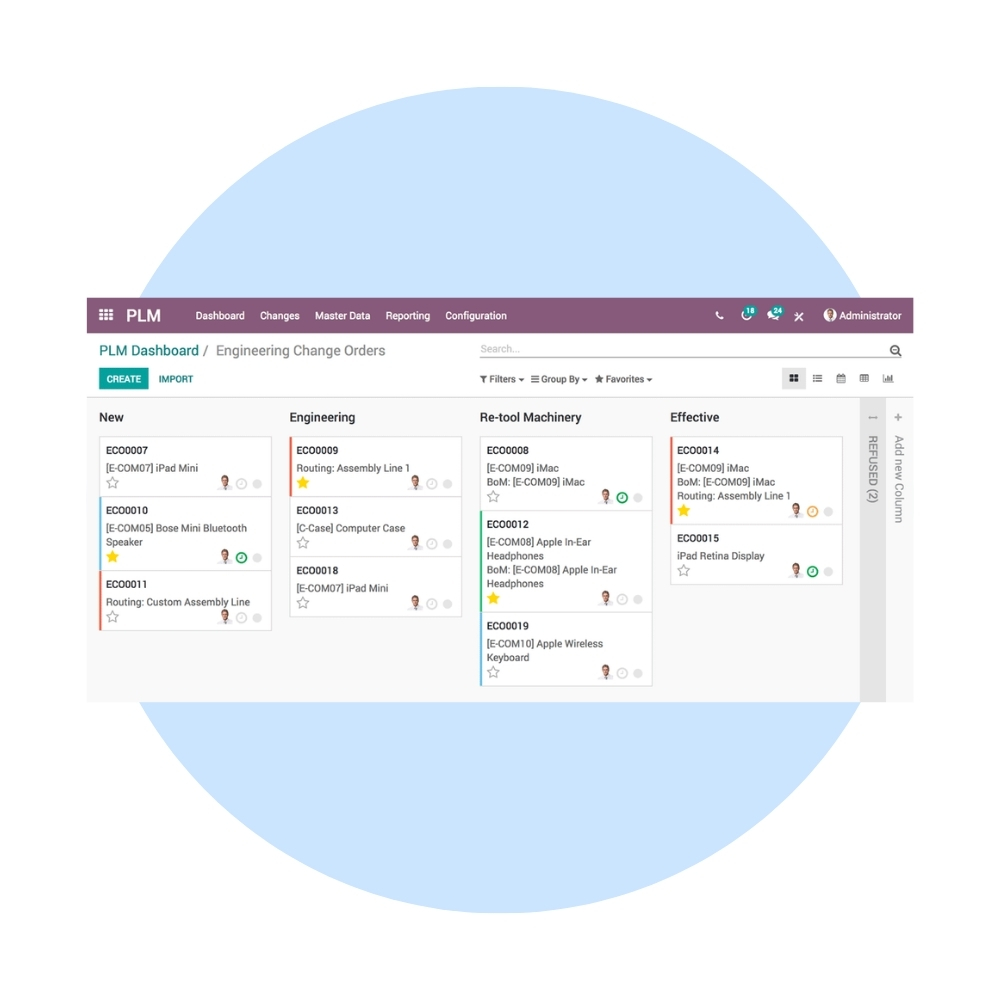
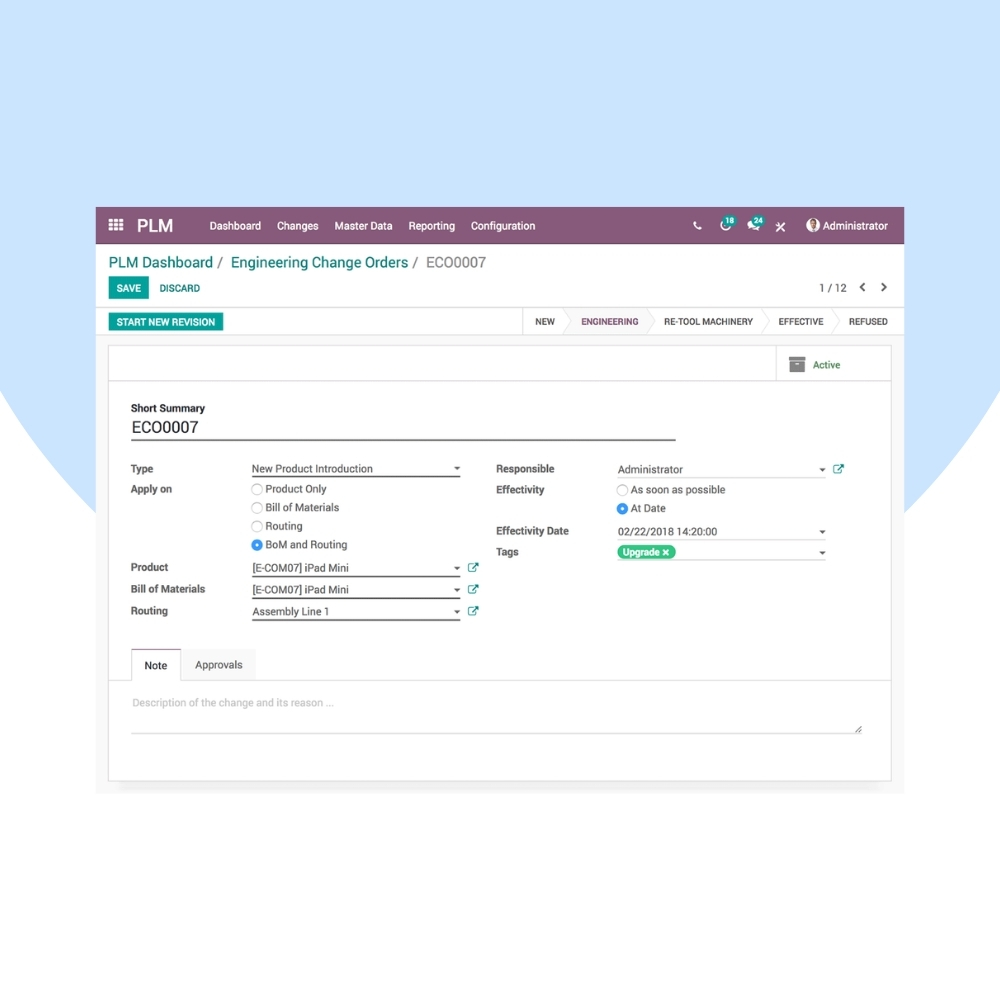
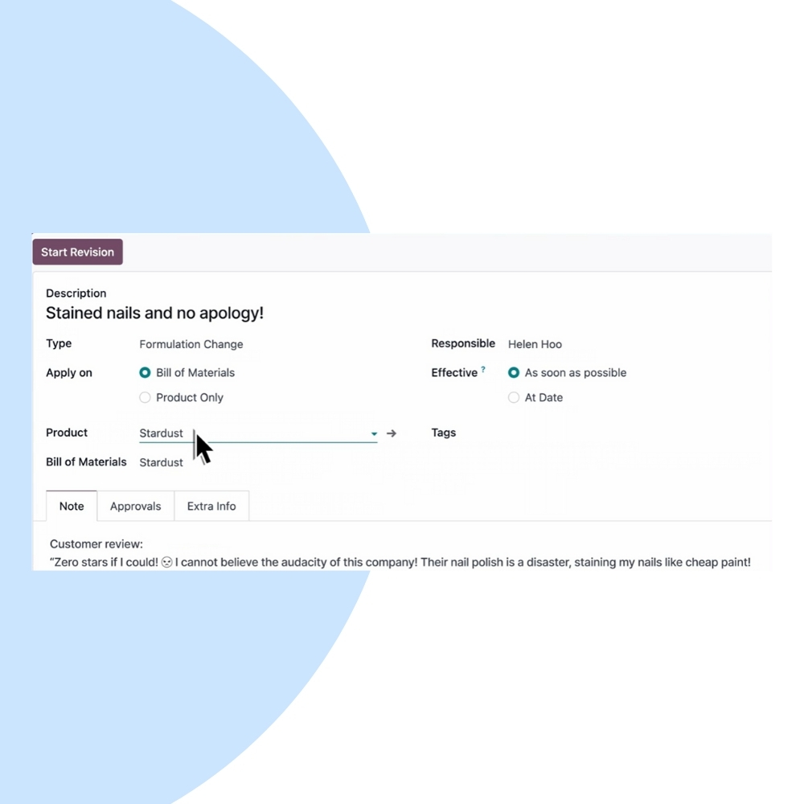

Manage product versions and engineering changes with Odoo PLM. We help manufacturers and product-driven businesses control revisions, approvals, and collaboration between engineering and production teams.
We configure Odoo PLM to support your product development workflow, engineering change requests (ECR), engineering change orders (ECO), and document version control. Integrate PLM seamlessly with Manufacturing, Inventory, Quality, and Documents.


Our PLM implementation ensures controlled product evolution, clear approval workflows, and seamless communication between engineering, manufacturing, and quality teams.
Manage ECRs and ECOs with structured approvals.
Track product and BOM revisions accurately.
Improve communication between engineering and production.
Attach drawings and specifications to products.
See exactly when and why changes were made.
Fully integrated with Manufacturing & Inventory.
We help you continuously optimize PLM processes, reduce engineering errors, and ensure smooth product evolution throughout the lifecycle.
